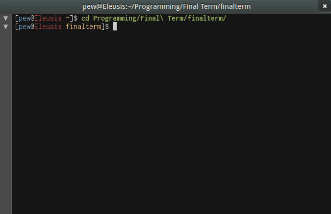

Code contributions, bug reports and suggestions are welcome on GitHub.
To discuss Final Term and get support, join #finalterm on Freenode.
Final Term Terminal Emulator
Don't just use your system — command it!
Final Term is a new breed of terminal emulator.
It goes beyond mere emulation and understands what is happening inside the shell it is hosting. This allows it to offer features no other terminal can:
{kind=link}
Semantic text menus
Final Term knows which pieces of terminal output represent filenames, PIDs, web URLs or IP addresses and provides context-aware commands for each of them.
New semantic menus can be added effortlessly with a powerful yet simple text file-based plug-in system — no programming required.

Smart command completion
Final Term knows when it is displaying a command prompt to you, and it knows all the commands that you ever entered.
The moment you start typing, suggestions from your terminal history automatically pop up — lightning fast and sorted by an algorithm that ensures what you want to type is almost always right at the top.
{kind=link}
GUI terminal controls
Final Term lets you collapse command output much like a programmer's editor lets you fold code.
Final Term recognizes "ASCII art scrollbars" in the output of supported programs like wget and displays matching GUI scrollbars, allowing you to monitor progress while the output is scrolled away.
But wait, there's more (in fact, there is much, much more)...
Omnipotent keybindings. Yes, they're that awesome.
Binding any key (or combination of keys) to arbitrarily many functions is as simple as editing a text file. Have a look:
<Ctrl>L = RUN_SHELL_COMMAND "ls -lh"
This will cause Ctrl+L to execute the command ls -lh in the shell. If you can decipher that, you have already mastered Final Term keybindings.
In addition to application-level keybindings, Final Term also allows you to define arbitrarily many global (i.e. system-wide) shortcuts. These use the same syntax as local ones, but make Final Term do your bidding regardless of which application has the focus.
{kind=link}
{kind=link}
All the colors you'll ever need. Or want. Or knew existed.
Final Term supports 8 terminal colors.
Final Term supports 16 terminal colors.
Final Term supports 256 terminal colors out of the box.
And Final Term is one of the very few terminal emulators that support 24-bit RGB terminal colors.
All of these colors can be customized using color schemes, of which Final Term already ships 10 beautiful ones by default — each of them in a light and a dark version. More can easily be generated using the supplied Base16 Builder template.
{kind=link}
{kind=link}
Looks from 2013. Terminal from 1978.
Final Term's beautiful, hardware-accelerated user interface redefines what you can expect from a terminal emulator's GUI. Everything is slick, smooth and animated.
Whether you are working on your day job or in the deepest night, Final Term will dress accordingly: With a single switch, the interface flips from light to dark and back.
If that alone does not fulfill your customization needs, do not worry — the entire UI can be skinned using themes.
Drop down. Show up.
Inspired by the wonderful Guake (and, ultimately, Quake), Final Term drops down from the top of your screen at the press of a key and slides up when the same key is pressed again.
Another key simply brings the terminal window to the foreground when it is hidden, and hides it again.
Exactly which keys do that? Your choice, of course...
{kind=link}
Built to last. Built to perform.
Final Term stands on the shoulders of giants by building on proven, powerful open source technologies such as GTK+ 3, Clutter and Mx.
Final Term is written in 100% Vala, the language of Desktop Linux's future, and runs at native speed without the need for any runtime.
Final Term's source code is precision engineered with a thoroughly object oriented approach and a clean model—view—controller separation, maximizing maintainability and extensibility.
Free. Forever.
The future of software is open source.
Final Term is free and open source software, released under the terms of the GNU General Public License version 3.
Development happens in the open and input of any kind is very much appreciated.